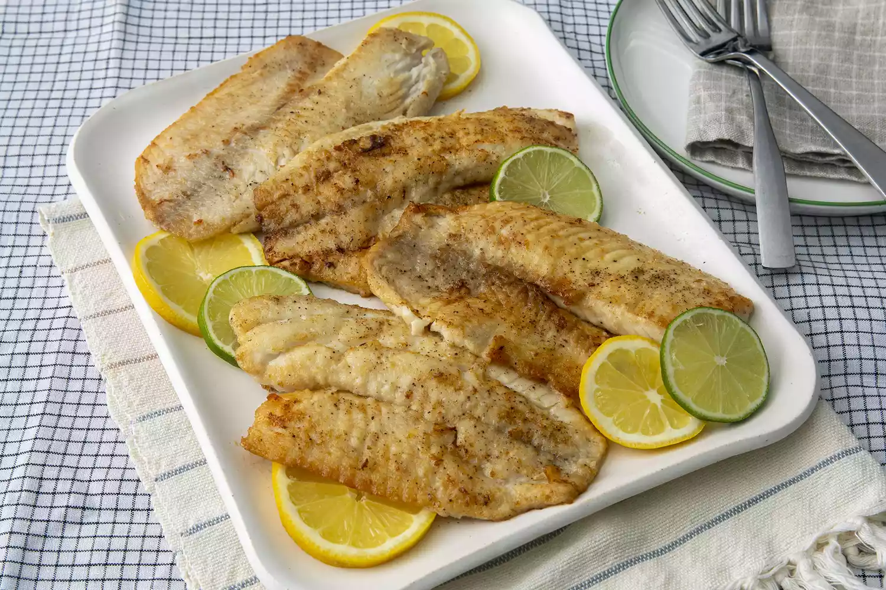

Pan-Seared Tilapia

What Is Tilapia?
Tilapia is a freshwater white fish with a pleasantly flaky texture and mild flavor.
It's one of the most popular types of fish in the United States because it's inexpensive, easy to find, and easy to prepare.
What to Serve With Tilapia
- Roasted Garlic Lemon Broccoli
- Oven-Roasted Asparagus
- Oven-Roasted Potatoes
- Gourmet Mushroom Risotto
- Classic Restaurant Caesar Salad
Ingredients
- 4 (4 ounce) tilapia fillets
- salt and ground black pepper to taste
- ½ cup all-purpose flour
- 2 tablespoons unsalted butter, melted
- Classic Restaurant Caesar Salad
- 1 tablespoon lemon juice, or to taste (Optional)
- 1 teaspoon chopped fresh flat-leaf parsley, or to taste (Optional)
- ½ teaspoon chopped fresh thyme, or to taste (Optional)
Directions
- Rinse tilapia fillets in cold water and pat dry with paper towels. Season both sides of each fillet with salt and pepper.
- Place flour in a shallow dish. Gently press each fillet into the flour to coat and shake off any excess.
- Heat olive oil in a large skillet over medium-high heat.
Cook tilapia fillets in the hot oil, in batches if necessary, until fish flakes easily with a fork, about 4 minutes per side.
- Brush the melted butter onto the tilapia fillets in the last minute before removing from the skillet.
- Drizzle fillets with lemon juice and garnish with parsley and thyme.
Back To Top
Back To Main Menu